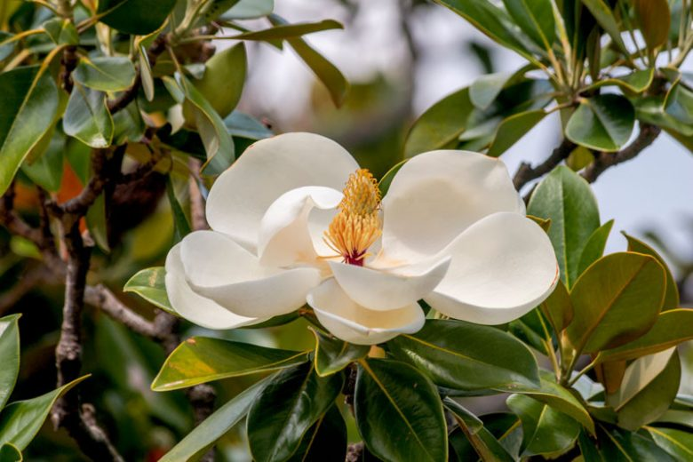
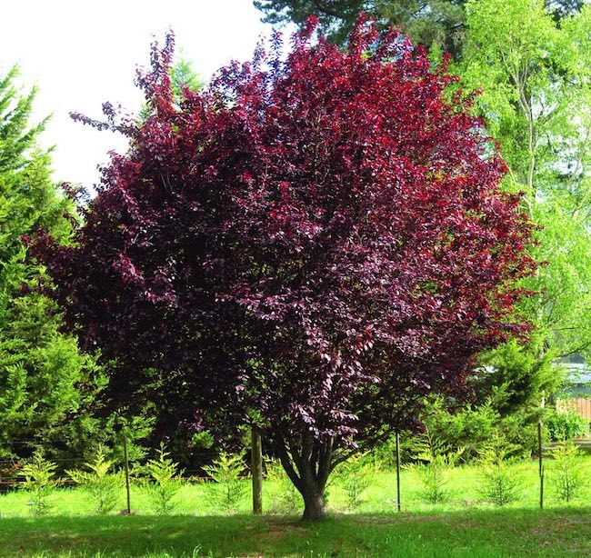
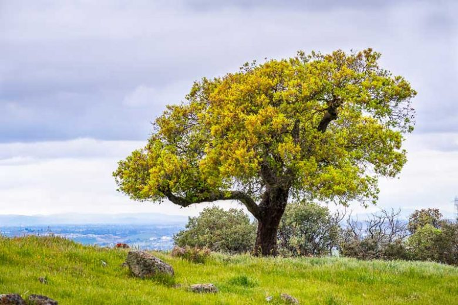

Current Koppen Climate Zone: Csb
Warm summer mediterranean: warm (not hot), dry summers, never above 72°F, cool ocean currents, upwelling, higher latitudes → cool.
Projected Koppen Climate Zone in 2100: Csb
Warm summer mediterranean: warm (not hot), dry summers, never above 72°F, cool ocean currents, upwelling, higher latitudes → cool.
2023 Population: 635,067.
Average SUHI daytime: 1.21°C
Average SUHI nighttime: 0.4°C
Climate in 2100 Similar to current San Jose
Urban Trees Common in San Jose / Csb

Pistacia chinensis (Chinese pistache)
Lagerstroemia indica (Crape myrtle)

Platanus acerifolia (London planetree)

Liquidambar styraciflua (American sweetgum)

Zelkova serrata (Japanese zelkova)
Pyrus calleryana (Callery pear)
Cupressus sempervirens (Italian cypress)

Magnolia grandiflora (Southern magnolia)

Prunus cerasifera (Cherry plum)

Quercus agrifolia (Coast live oak)